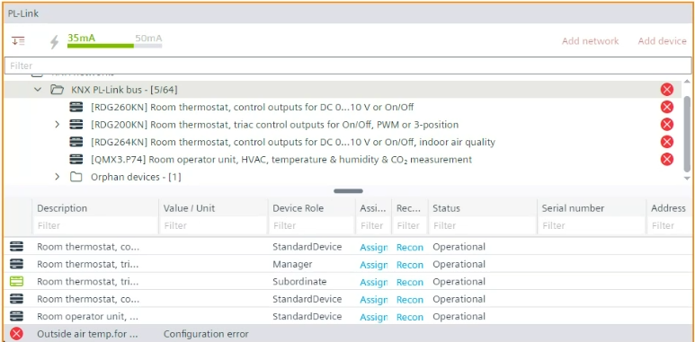

分配 KNX PL-链接设备（在线）
配置 KNX PL-Link 设备后，您可以下载并分配该设备以匹配您的在线设备。

如果网络上存在一台工程设备和一台相同类型的设备，它们会自动找到彼此并进行匹配。
或者，在离线数据中输入设备的序列号。下载后，设备会自动查找并配置该设备（如果网络上可用）。
1. Assign a KNX PL-Link device
- The KNX PL-Link devices are configured.
- The device is connected.
Connect and disconnect
- Go to Building > Building Structure.
- Right-click a configured PXC4.. PXC5.. or PXC7.. and select Go to engineering.
- Open the KNX PL-Link task.
- Click Play
 .
. - An orange frame around the KNX PL-Link area becomes visible.
- In the KNX PL-Link area, select the KNX PL-Link device network.
- In the KNX PL-Link bus table, click Assign.

- On the corresponding device, press the pin. This is dependent on the used hardware.
- Check the hardware documentation for information on putting the room operator unit into programming mode.
- ABT Site starts downloading the configuration to the device.
- Once the configuration is finished, the status l changes to Operational.
- The KNX PL-Link device is assigned and the configuration loaded. Reset triggers a reconfiguration of the assigned device.
- When online, the tool shows all unassigned devices available on the network in the Orphan devices list.
2. Read back the serial number
必须执行此步骤才能将序列号读回项目。
- The device is connected.
Connecting to devices
- Go to Startup.
- Open the Configure and download task.
- Select the Discovered devices tab.
- Right-click the device and select Upload.
- The device serial number is uploaded to the project.